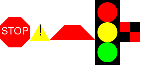
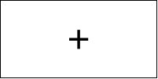

Images
Racket has support for drawing images
(require 2htdp/image) ; MANDATORY! IF NOT HERE, IT WONT WORK
; basic shapes
(triangle 100 "solid" "black")
(right-triangle 100 100 "solid" "blue")
(rectangle 200 100 "solid" "red")
(square 100 "solid" "green")
(circle 123 "solid" "orange")
; basic transformations
(rotate 45 (rectangle 200 100 "solid" "red"))
(flip-horizontal (right-triangle 100 100 "solid" "blue"))
(flip-vertical (right-triangle 100 100 "solid" "blue"))
; combining images
(overlay
(circle 8 "solid" "pink")
(circle 16 "solid" "blue")
(circle 24 "solid" "red")
(circle 32 "solid" "green"))
(above
(circle 32 "solid" "green")
(rectangle 5 50 "solid" "brown"))
(beside (rectangle 20 70 "solid" "blue")
(rectangle 20 50 "solid" "green")
(rectangle 20 30 "solid" "yellow")
(rectangle 20 10 "solid" "red"))
; text-images
(text "mcdonalds" 24 "olive")
; different from the string mcdonalds
; image properties
(image-width (rectangle 30 40 "solid" "red"))
(image-height (rectangle 30 40 "solid" "red"))
; you can also paste in your own
#Exercise 1 Image Shapes

(require 2htdp/image)
; THESE ANSWERS SHOULD RESEMBLE THESE IMAGES RESPECTIVELY:
; https://howtocode.pages.dev/images/shapes.png
; PROBLEM 1: Make a Stop sign using 2htdp/image
; use regular-polygon for the hexagon
; https://docs.racket-lang.org/teachpack/2htdpimage.html#%28def._%28%28lib._2htdp%2Fimage..rkt%29._regular-polygon%29%29
; PROBLEM 1.1: Make a danger/warning sign with a triangle and an exclamation mark ⚠️
; Problem 1.2: Make a isosoleces trapezoid
; Problem 1.3: Make a traffic light with red, yellow, and green bulbs and a black rectangular background
; Problem 1.4: Make a red checkerboard patternAnswer
(require 2htdp/image)
; THESE ANSWERS SHOULD RESEMBLE THESE IMAGES RESPECTIVELY:
; https://howtocode.pages.dev/images/shapes.png
; PROBLEM 1: Make a Stop sign using 2htdp/image
; use regular-polygon for the hexagon
; https://docs.racket-lang.org/teachpack/2htdpimage.html#%28def._%28%28lib._2htdp%2Fimage..rkt%29._regular-polygon%29%29
(overlay
(text "STOP" 20 "white")
(regular-polygon 25 8 "solid" "red"))
; PROBLEM 1.1: Make a danger/warning sign with a triangle and an exclamation mark ⚠️
(overlay
(text "!" 30 "black")
(triangle 40 "solid" "yellow"))
; Problem 1.2: Make a isosoleces trapezoid
(beside
(flip-horizontal (right-triangle 30 30 "solid" "red"))
(square 30 "solid" "red")
(right-triangle 30 30 "solid" "red"))
; Problem 1.3: Make a traffic light with red, yellow, and green bulbs and a black rectangular background
(overlay
(above
(circle 20 "solid" "red")
(circle 20 "solid" "yellow")
(circle 20 "solid" "green"))
(rectangle 50 130 "solid" "black"))
; Problem 1.4: Make a red checkerboard pattern
(above
(beside (square 20 "solid" "red") (square 20 "solid" "black"))
(beside (square 20 "solid" "black") (square 20 "solid" "red")))
#Top Left Origin Practice
Middle as origin
In all the math you have ever done in school, the origin was in the middle and going:
- ^ up is + positive Y
- v down is - negative Y
Top left as origin
When working with computers, most often 90% of the time it starts from the top left, and the Y axis is inverted!
- ^ up is - negative Y
- v down is + positive Y
Go to https://www.desmos.com/calculator and drag 0,0 to the top left corner and invert the Y coordinates for more of a visual intution.
Get some practice here by plotting guessing some plot points:
Top left origin practice with plotting points
#Exercise 1.2 place-image center
In a lot of 3D shooting games, there are crosshairs to help you aim. Your job is to put the crosshair in the center with place-image
Your result should look like this: with the + centered in the middle

(require 2htdp/image)
;PROBLEM: Use (place-image) to put a crosshair,
; that is the text of a plus +, on the CENTER of this empty-scene
; https://jestlearn.com/images/center_crosshair.png
(text "+" 50 "black")
(empty-scene 200 100)Answer
(require 2htdp/image)
;PROBLEM: Use (place-image) to put a crosshair,
; that is the text of a plus +, on the CENTER of this empty-scene
; https://jestlearn.com/images/center_crosshair.png
; 100 50 is also a valid solution
; letting racket do the division (/ 200 2) for us is overall better
(place-image
(text "+" 50 "black")
(/ 200 2)
(/ 100 2)
(empty-scene 200 100))